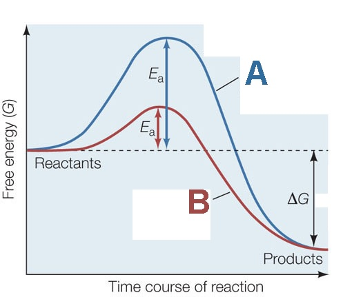

1) What is the main reason why the boiling point of HF is much higher than that of HCl?
A) HF has stronger London dispersion forces than HCl
B) HCl can hydrogen bond whereas HF cannot
C) HF has dipole-dipole forces whereas HCl does not
D) HF can hydrogen bond whereas HCl cannot*
HF has a hydrogen attached to a N, O, or F, so it can hydrogen bond whereas HCl does not, so it cannot hydrogen bone. Hydrogen bonding gives HF a higher boiling point.
2) Which of the following 3 alkane isomers would you expect to have the lowest boiling point?
A) Neopentane*
B) Isopentane
C) Pentane
D) Since they are isomers, they will have the same boiling point.
Neopentane is the most branched alkane, so it will have the least surface area interacting for London dispersion forces. Thus it will have the lowest intermolecular forces and the lowest boiling point.
3) Using the phase diagram of water below, what phase transition would occur if the pressure was increased from 0.005 atm to 46 atm at 30.°C?
A) Sublimation
B) Condensation*
C) Freezing
D) Deposition
At 0.005 atm and 30.°C the water would be a gas, but at 46 atm and 30.°C it would be a liquid. So the phase transition is condensation
4) How much energy is required to heat 38.6 g H2O from a liquid at 54.9°C to a gas at 130°C? ΔHvap = 40.7 kJ/mol Cliquid = 4.184 \( \frac{J}{g°C} \) Cgas = 2.01 \( \frac{J}{g°C} \) Csolid = 2.09 \( \frac{J}{g°C} \) Tmelting = 0°C Tboiling = 100°C
A) 1580 kJ
B) 96.8 kJ*
C) 9700 (3 sf) kJ
D) 106 kJ
To calculate the energy required to heat water from a liquid at 54.9°C to a gas at 130°C, we need to consider the following steps:
Heating the liquid water from its initial temperature to its boiling point.
Vaporizing the liquid water at its boiling point to gas.
Heating the water vapor from it's boiling point to 130°C.
Step 1: Heating the liquid water First, we calculate the energy required to heat the liquid water from 54.9°C to its boiling point at 100°C.
q1 = m x Cliquid x ΔT1
where: q1 = energy required (in joules) m = mass of water (in grams) Cliquid = specific heat capacity of liquid water (in J/g-°C) ΔT1 = change in temperature (final temperature - initial temperature) Cgas = specific heat capacity of liquid water (in J/g-°C)
Given: m = 38.6 g Cliquid = 4.184 J/g-°C ΔT1 = 100°C - 54.9°C = 45.1°C
q1 = (38.6 g) x (4.184 J/g-°C) x (45.1°C) q1 ≈ 7280 J x \( \frac{1 kJ}{1000 J} \) = 7.28 kJ
Step 2: Vaporizing the liquid water Next, we calculate the energy required to vaporize the liquid water at its boiling point.
q2 = n x ΔHvap
where: q2 = energy required (in joules) n = number of moles of water ΔHvap = enthalpy of vaporization (in J/mol)
To calculate the number of moles of water, we use the molar mass of water (H2O), which is approximately 18.02 g/mol.
mol = 38.6 x \( \frac{1 mol H_2O}{18.02 g H_2O} \) ≈ 2.14 mol
Given: ΔHvap = 40.7 kJ/mol
q2 = (2.14 mol) * (40.7 kJ/mol) ≈ 87.2 kJ
Step 3: Heating the water vapor, we calculate the energy required to heat the water vapor from 100°C to 130°C.
q3 = m x Cliquid x ΔT2
where: q3 = energy required (in J) m = mass of water (in grams) Cgas = specific heat capacity of liquid water (in J/g-°C) ΔT1 = change in temperature (final temperature - initial temperature)
Given: m = 38.6 g Cliquid = 2.01 J/g-°C ΔT1 = 130°C - 100°C = 30.0°C
q3 = (38.6 g) x (2.01 J/g-°C) x (30.0°C) q3 ≈ 2330 J x \( \frac{1 kJ}{1000 J} \) = 2.33 kJ
Total energy required: The total energy required is the sum of q1, q2 and q3.
Total energy = q1 + q2 + q3 ≈ 7.28 kJ + 87.2 kJ + 2.33 kJ
Total energy ≈ 96.8 kJ
5) Which of the following statements is TRUE?
A) Increasing the temperature of a liquid generally causes it to become a solid
B) Particles move to a lower potential energy when they form bonds*
C) Hydrogen bonding is generally stronger than covalent bonds
D) Breaking bonds releases energy
It is true that particles move to a lower potential energy when they form bonds. Ionic and covalent bonds are stronger than intermolecular forces. Energy is required to break bonds, energy is not released when bonds are broken. Generally speaking, increasing pressure will cause a chemical to go from gas to liquid to solid (the exception being chemicals where the solid has a lower density than the liquid). Increasing temperature will cause a chemical to go from gas to liquid to solid.
6) Which of the following would you expect to have the lowest surface tension?
A) CH3CH2CH2CH2CH2CH3
B) CH3CH2CH2CH2CH3*
C) CH3CH2CH2CH2CH2CH2CH3
D) CH3CH2CH2CH2CH2CH2CH2CH3
The shortest carbon chain will have the smallest London dispersion forces, thus the lowest surface tension.
7) Determine the normal boiling point (at 760 mm Hg) of a substance whose vapor pressure is 39.2 mm Hg at 54.1°C and has a ΔHvap of 26.6 kJ/mol.
A) 57.0 K
B) 470. K*
C) 328 K
D) 251 K
To determine the normal boiling point of a substance, we need to find the temperature at which its vapor pressure is equal to the atmospheric pressure at 760 mm Hg.
Given: T1: 54.1°C T2: ? P1: 39.2 mm Hg P2 = 760 mm Hg (normal pressure) ΔHvap = 26.6 kJ/mol R = gas constant (8.3145 J/mol·K)
To calculate the normal boiling point, we can use the Clausius-Clapeyron equation:
ln(P2/P1) = -(ΔHvap/R) * (1/T2 - 1/T1)
Converting the given values to K and J: T1: 54.1°C + 273.15 = 327 K ΔHvap = 26.6 kJ/mol = 26.6 × 1000J/1 kJ = 2.66x104 J/mol
Now, let's solve for T2: -0.000927 K = (1/T2 - 1/327 K) -0.000927 1/K = 1/T2 - 1/327 K -0.000927 1/K + 1/327 1/K = 1/T2 0.00213 1/K = 1/T2
Taking the inverse of both sides: 470. K = T2
8) In which of the following figures is the adhesive force greater than the cohesive force?
A) The image labeled A
B) The image labeled B
C) The image labeled C*
D) None of the above.
When adhesive force is greater than the cohesive force the fluid will have a greater attraction to the side of the tube as it does other molecules in the fluid, so it will cause the meniscus to curve upwards on the sides, thus image B is the answer.
9) (SLO 1.2) In methane CH4, which intermolecular forces are present?
A) London dispersion and hydrogen bonding
B) Only London dispersion*
C) London dispersion and dipole-dipole
D) Only dipole-dipole and ion-dipole forces are present
methane CH4 is nonpolar thus only London dispersion forces are present.
10) Choose the substance with the highest ΔHvap.
A) CH4
B) KF*
C) NH3
D) OF2
KF is an ionic compound. Ionic bonds are stronger than intermolecular bonds, so it will have the highest ΔHvap. NH3 can hydrogen bond, thus would have the second highest ΔHvap. OF2 is polar (dipole-dipole forces), thus would have the third highest ΔHvap. CH4 is non-polar (only London dispersion forces), thus would have the lowest ΔHvap.
11) Which of the following has the lowest viscosity?
A) H2O
B) CH3CH2CH2OH
C) IF5
D) Br2*
Br2 has the lowest viscosity, because it has the lowest intermolecular forces (only London dispersion forces). H2O and CH3CH2CH2OH can hydrogen bond. IF5 has dipole-dipole forces because it is an asymmetrical shape (square pyramidal).
12) Identify the place which has the highest boiling point of water.
A) New Orleans, sea level
B) Denver, Colorado, 5280 feet
C) Death Valley, 282 feet below sea level*
D) Mt. Everest, 29,035 feet
The highest boiling point will be where the atmospheric pressure is the highest. Atmospheric pressure will be the highest at the lowest elevation.
13) Which of the following increases the rate of vaporization?
A) Strong intermolecular bonds
B) Decreasing temperature
C) Increasing temperature*
D) Decreasing the surface area
Increasing the surface area, weak intermolecular bonds, or increasing the temperature will lead to an increased rate of vaporization.
14) Place the following substances in order of increasing vapor pressure at a given temperature. SF6 SiH4 SF4
A) SF6 < SiH4 < SF4
B) SiH4 < SF6 < SF4
C) SF4 < SF6 < SiH4*
D) SF6 < SF4 < SiH4
SF4 is see saw shaped, so it is polar and has the lowest vapor pressure. SF6 is octahedral and SiH4 is tetrahedral, which are symmetrical shapes, so they are non-polar. However SF6 is much larger, thus will have more London dispersion forces, and a lower vapor pressure.
15) How many moles of KBr are contained in 383 g of water in a 0.279 m KBr solution?
A) 12.7 mol
B) 107 mol
C) 1.11 mol
D) 0.107 mol*
383 g water x (1 Kg / 1000 g)= 0.383 Kg 0.383 Kg of water X (0.279 mol KBr / 1 Kg water) = 0.107 mol
16) What is the mol fraction of ethanol, C2H5OH (46.07 g/mol), in a solution of 79.1 g of ethanol and 300 g of water (18.02 g/mol)?
A) 9.70
B) 0.103
C) 0.0935*
D) 0.907
79.1 g ethanol x (1 mol ethanol / 46.07 g ethanol) = 1.72 mol ethanol 300 g water x (1 mol water / 18.02 g water) = 16.7 mol water Total moles solution = 1.72 mol ethanol + 16.7 mol water = 18.4 mol mole fraction of ethanol = 1.72 mol ethanol / 18.4 mol = 0.0935
17) Determine the vapor pressure of a solution at 25°C that contains 96.0 g of glucose (C6H12O6) (180.2 g/mol) in 300 mL of water (18.02 g/mol). The vapor pressure of pure water at 25°C is 23.8 torr, and the density of water is 1.00 g/mL.
A) 744 torr
B) 0.762 torr
C) 23.1 torr*
D) 0.738 torr
96.0 g of glucose (C6H12O6) x (1 mol glucose / 180.2 g glucose) = 0.533 mol glucose 300 mL water x (1.00 g water/ 1 mL water) x (1 mol water / 18.02 g water) = 16.6 mol water Total moles solution = 0.533 mol glucose + 16.6 mol water = 17.2 mol Xwater = 16.6 mol water / 17.2 mol = 0.969 Psolution = Xwater x Ppure water = 0.969 x 23.8 torr = 23.1 torr
18) (SLO 1.7) What is a solution containing the maximum equilibrium amount of solute at a given temperature called?
A) An unsaturated solution
B) A dilute solution
C) A saturated solution*
D) A supersaturated solution
E) None of the above.
An unsaturated solution contains less than the maximum amount of solute at a given temperature A supersaturated solution contains more than the maximum amount of solute at a given temperature A saturated solution contains the maximum equilibrium amount of solute at a given temperature
19) (SLO 1.4) An aqueous solution is 0.773 m (molality) NaI (149.9 g/mol). What is the molarity (M) of the solution if the density of the aqueous solution is 1.12 g/mL?
A) 0.693 M
B) 0.776 M*
C) 0.00741 M
D) 0.866 M
A solution is 0.773 m NaI (149.9 g/mol). What is the molarity (M) of the solution if the density of the solution is 1.12 g/mL? 0.773 mol NaI x (149.9 g NaI)/(1 mol NaI) = 116 g NaI 1 kg water x 1000 g/1 kg = 1000 g water 1000 g water + 116 g NaI = 1120 g solution 1120 g solution x 1 mL/1.12 g = 996 mL 996 mL x 1 L/1000 mL = 0.996 L molarity (M) = 0.773 mol NaI/ 0.996 L = 0.776 M
20) Which of the following compounds will be most soluble in water (H2O)?
A) Acetylene (C2H2)
B) Ammonia (NH3)*
C) Ethane (C2H6)
D) Methane (CH4)
E) None of the above.
The compounds will be most soluble in water (H2O) will be a compound that can also hydrogen bond. Of the choices, only Ammonia (NH3) can hydrogen bond, so Ammonia (NH3) is the answer.
21) Which of the following have a great impact on the solubility of a solid in a liquid?
A) Temperature and atmospheric pressure
B) Temperature only*
C) Atmospheric pressure only
D) None of the above.
Only temperature has any significant impact on the solubility of a solid (increasing the temperature increases the solid's solubility). Both temperature and partial pressure of the gas would have a significant impact on the solubility of a gas (increasing the temperature decreases the solubility of a gas, and increasing the partial pressure of the gas increases the solubility of a gas).
22) A 4.18 L sample of an aqueous solution contains 0.195 g of sodium ions. Determine the concentration of sodium ions in ppm if the density of the solution is 1.09 g/mL.
A) 42.8 ppm*
B) 4.28x104 ppm
C) 0.0000428 ppm
D) 47.6 ppm
4.18 L solution x (1000 mL / 1 L) x (1.09 g / 1 mL) = 4560 g solution
PPM = mass of sodium ions/mass of solution x 106 = 0.195 g of sodium ions / 4560 g solution x 106 = 42.8 ppm
23) Determine the Henry's law constant for an unknown gas in water at 25°C if the unknown gas at a pressure of 0.0162 atm produces a solution with a concentration of 3.25 M.
A) 0.00498 M/atm
B) 201 M/atm*
C) 0.0526 M/atm
D) 1.32 M/atm
S = Kh * p Kh = S/p Kh = 3.25 m/0.0162 atm = 201 M/atm
24) What mass (in g) of NH3 (17.03 g/mol) must be dissolved in 475 g of methanol (32.04 g/mol) to make a 1.21 m solution?
A) 18.5 g
B) 9.81 g*
C) 0.306 g
D) 0.576 g
What mass (in g) of NH3 (17.03 g/mol) must be dissolved in 475 g of methanol (32.04 g/mol) to make a 1.21 m solution? 0.475 Kg solution x (1.21 molsolute / 1 Kg solvent) X (17.03 g solute / 1 mol solute) = 9.81 g
25) Which of the following would result in an endothermic reaction?
A) The reactants have weaker bonds than the products
B) The products and reactants have equal strength bonds
C) The reactants are at a higher potential energy than the products
D) The reactants have stronger bonds than the products*
Exothermic: Products have stronger bonds/reactants have weaker bonds The product is at a lower potential energy
Endothermic: Products have weaker bonds/reactants have stronger bonds The product is at a higher potential energy
26) The enthalpy of solution for a compound is -84 kJ/mol, and the enthalpy of hydration for the compound's ion X- is -210 kJ/mol. Calculate the lattice energy (in kJ/mol) of the compound.
A) -294 kJ/mol
B) 294 kJ/mol
C) -126 kJ/mol
D) 126 kJ/mol*
To solve this problem, we can use the following equation:
ΔHsolution = ΔHlattice + ΔHhydration
Where: ΔHsolution = Enthalpy of solution ΔHlattice = Lattice energy ΔHhydration = Enthalpy of hydration
We are given: ΔHsolution = -84 kJ/mol ΔHhydration = -210 kJ/mol
Rearranging the equation, we can solve for ΔHlattice:
27) A sealed container contains 0.463 L of water with an atmosphere of oxygen gas. What is the concentration of O2 in the water if the external pressure is 3.26 atm given that kH for O2 is 1.66 × 10-6 M/mm Hg at this temperature?
A) 2580 M
B) 0.00411 M*
C) 5.41x10-6 M
D) 7.12x10-9 M
Step 1: Convert the external pressure from atm to mm Hg: 3.26 atm x 760 mmHg / 1atm ≈ 2480 mm Hg
Step 2: Calculate the concentration of O2 in water using Henry's law: Concentration of O2 = kH * Partial pressure of O2 Partial pressure of O2 = External pressure
Concentration of O2 = 1.66 × 10-6 M/mm Hg x 2480 mm Hg mm Hg Concentration of O2 ≈ 0.00411 M
28) (SLO 1.3) The Henry’s law constant for carbon dioxide gas in water at 20ºC is 392 x 10-4 M/atm. When the partial pressure of carbon dioxide above a sample of water is 0.576 atm, the concentration of carbon dioxide in the water is ______ M.
A) 14.7
B) 0.0681
C) 0.0226*
D) 226
Henry's law relates the concentration of a gas in a liquid to its partial pressure above the liquid. The equation for Henry's law is:
C = k * P
where: C is the concentration of the gas in the liquid (in Molarity, M) k is the Henry's law constant for the specific gas-solvent system (in M/atm) P is the partial pressure of the gas above the liquid (in atm)
Given: Henry's law constant (k) for carbon dioxide gas in water = 392 x 10-4 M/atm Partial pressure of carbon dioxide (P) = 0.576 atm
Using Henry's law, we can calculate the concentration of nitrogen gas in the water (C):
C = (392 x 10-4 M/atm) * (0.576 atm) C ≈ 0.0226 M
29) (SLO 2.4) What rate is termolecular?
A) Rate = K[A][B][C]*
B) Rate = K[A]
C) Rate = K[A][B]
D) Rate = K
Adding the exponents (orders) of the concentrations for K[A][B][C] gives 3 so the reaction would be termolecular
30) Which step is always the rate-determining step in a multi-step reaction?
A) The slowest step*
B) The first step
C) The last step
D) The fastest step
The slowest step is always the rate determining step.
31) Which of these two pathways represents the catalyzed pathway? 
A) A
B) B*
C) All of the above.
D) None of the above.
The catalyzed pathway will have a lower activation energy (Ea).
32) What is are the units for the k in the following rate law. Rate = k[A]2
A) 1/(M3s) or M-3s-1
B) M/s or Ms-1
C) 1/(Ms) or M-1s-1*
D) 1/(M2S) or M-2S-1
Based on the rate law (Rate = k[A]2), the overall order of the reaction is second, so the exponents for units of the rate constant will add to -2. Since seconds is always to the -1 power, molarity will have to be to the -1 power. Thus 1/(Ms) or M-1s-1 is the answer.
33) The following reaction is a first order reaction. If the rate constant is 2.53x10-4 s-1, and the original concentration of N2O5 is 2.97x10-2 M, then what is the half-life?
2 N2O5 (g) ➞ 4 NO2 (g) + O2 (g)
A) 0.00852 s
B) 2740 s*
C) 1.33x105 s
D) 58.7 s
Since this is a second order reaction, the half-life equation is \( \frac{0.693}{K} = t_{1/2} \) Substituting in 2.53 s-1 for K, gives: t1/2 = 0.693/(2.53 s-1) = 1.33x105 s
34) What are biological catalysts called?
A) Exfoliators
B) Enzymes*
C) Substrates
D) Inhibitors
Biological catalysts are called enzymes. Substrates bind to catalysts. Inhibitors slow the action of an enzyme.
35) What generally happens with a reaction when the temperature is increased?
A) The rate constant (K) decreases, causing the rate of the reaction to decrease.
B) The rate constant (K) increases, causing the rate of the reaction to decrease
C) The rate constant (K) increases, causing the rate of the reaction to increase*
D) The rate constant (K) decreases, causing the rate of the reaction to increase
If you think about a generic rate equation such as Rate = k[A][B], anything that affects the rate, that isn't a change in concentration of A or B must cause a change in k. Since an increase in temperature increases the rate of a reaction, it must be because it increases the value of k.
The effect of temperature on the equilibrium constant is shown in the Arrhenius equation. k = \( Ae^{\frac{-E_a}{RT}} \)
36) (SLO 2.3) What is the overall order of the following reaction, given the rate law? 3 X + 2 Y ➞ 4 Z Rate = k[X]2[Y]2
A) 4*
B) 5
C) 3
D) 2
Ignore the chemical equation, and just add the exponents (orders) of the reactants. Rate = k[X]2[Y]2 2 + 2 = 4
37) Which of the following expressions accurately depicts the rate of this reaction?
N2(g) + 3 H2(g) ➞ 2 NH3(g)
A) \( -\frac{1}{2}\frac{Δ[NH_3]}{Δt} \)
B) \( -\frac{Δ[H_2]}{Δt} \)
C) \( +\frac{Δ[N_2]}{Δt} \)
D) \( +\frac{1}{2}\frac{Δ[NH_3]}{Δt} \)*
You should be looking for an answer that shows a negative sign for reactants or positive for products. Also, the coefficient from the balanced chemical equation should be in the denominator. Rate =\( -\frac{Δ[N_2]}{Δt} \) = \( -\frac{1}{3}\frac{Δ[H_2]}{Δt} \) = \( +\frac{1}{2}\frac{Δ[NH_3]}{Δt} \)
38) Using the balanced chemical equation below, calculate the rate of rate reaction with a rate in change of concentration of NH3 equal to -14.7 M/s.
2 NH3 (g) + 3 Cl2 (g) → N2 (g) + 6 HCl (g)
A) 14.7 M/s
B) 7.35 M/s*
C) 216 M/s
D) 29.4 M/s
Rate = \( -\frac{1}{2}\frac{Δ[NH_3]}{Δt} \) = \( -\frac{1}{3}\frac{Δ[Cl_2]}{Δt} \) = \( +\frac{Δ[N_2]}{Δt} \) = \( +\frac{1}{6}\frac{Δ[HCl]}{Δt} \) Substitute in -14.7 M/s for change of concentration of NH3 Rate = -1/2 14.7 M/s Rate = 7.35 M/s
39) Identify the statement that is true.
A) A catalyst is an intermediate in a reaction
B) The rate constant will always double if you double the temperature
C) Catalysts decrease the rate constant
D) Increasing the temperature generally increases the rate constant*
If you look at a generic rate law (rate = k[A][B]), anything that affects the rate, besides changes in concentration are accounted for in the rate constant. Since increasing temperature increases the rate of a reaction, it will do so by increasing the rate constant. The same is true for adding a catalyst. The affect temperature has on the rate constant is shown in the Arrhenius equation. So is the effect of a catalyst, because it lowers the activation energy (Ea). K = \( Ae^{\frac{-E_a}{RT}} \)
40) The decomposition of ammonia on a hot platinum surface is zero-order reaction, and has a rate constant of 3.62x10-3Ms-1. If the initial concentration of ammonia is 8.16 M, what is the concentration of ammonia after 120. s?
A) 3.54 M
B) 7.73 M*
C) -3.21 M
D) 5.28 M
The integrated rate law for a zeroth order reaction is [A]t = -kt + [A]0 Substituting in 3.62x10-3Ms-1 for k, 120. s for t, and 8.16 M for [A]0 gives: [A]t = -3.62x10-3Ms-1 x 120. s + 8.16 M [A]t = 7.73 M
41) What is the order of the reaction represented by the graph below?
A) third
B) second
C) zeroth*
D) first
First order
Second order
Third order
42) (SLO 2.5) For a reaction that follows the general rate law, Rate = K[A]3[B]2, what will happen to the rate of reaction if the concentration of A is increased by a factor of 3?
A) The rate will increase by a factor of 27*
B) The rate will increase by a factor of 9.0
C) The rate will decrease by a factor of 1/27
D) The rate will decrease by a factor of 1/9.0
To solve this question, take the exponent (order) for A, and raise the factor (3) by that exponent. 33 = 27
43) (SLO 3.7) Consider the following reaction. Xe (g) + 2 F2 (g) ⇌ XeF4 (g)
A reaction mixture contains 5.39 atm of Xe, 6.18 atm F2. Once the reaction reaches equilibrium, the pressure of Xe is 4.28 atm. What is the equilibrium constant (Kp) for the reaction?
A) 0.0234
B) 0.0117*
C) -0.0117
D) 0.0500
R
Xe (g)
+ 2 F2 (g)
⇌ XeF4 (g)
I
5.39
6.18
0
C
-x
-2x
+x
E
4.28
6.18-2x
x
5.39 - x = 4.28 5.39 - 4.28 = x 2 x 1.11 = 2x 2.22 = 2x PXeF4 = 1.11 PF2 = 6.18 - 2x = 3.96 Kp = (1.11)/(4.28 x 3.962) Kp = 0.0165
44) If Q (the reactant quotient) is greater than the equilibrium constant, then which way will the reaction proceed more quickly?
A) In the forward direction
B) In the reverse direction*
C) All of the above.
D) None of the above.
If Q (the reactant quotient) is greater than the equilibrium constant, then it means we have too much product (numerator) and too little reactant (denominator) to be at equilibrium. Since reversible reactions will always proceed to equilibrium, the reaction will have to proceed in the reverse direction to produce more reactant, and use up some of the product.
45) (SLO 3.1) What is the equilibrium constant equation for the following reaction? 2 O3 (g) ⇌ 3 O2 (g)
A) K = \( \frac{[O_2]^3}{[O_3]^2} \)*
B) K = \( \frac{[O_2]^2}{[O_2]^2} \)
C) K = \( \frac{[O_3]^3}{[O_3]^3} \)
D) K = \( \frac{[O_3]^2}{[O_2]^3} \)
The equilibrium constant expression is concentration of products (raised to their coefficients) over concentration of reactants (raised to their coefficients). K = \( \frac{[O_2]^3}{[O_3]^2} \)
46) In the reaction below, at equilibrium, the concentration of N2 is 0.404 M, and the concentration of H2 is 0.323 M. Determine the equilibrium concentration of NH3 (g). 2 N2 (g) + 6 H2 (g) ⇌ 4 NH3 (g) Kc = 5.36x102
A) 2.89 M
B) 0.0993 M
C) 69.9 M
D) 0.561 M*
Kc = \( \frac{[NH_3]^4}{[N_2]^2[H_2]^6} \) = ([NH3]4)/(0.4042 x 0.3236) = 5.36x102 [NH3]4 = (0.4042 x 0.3236) x 5.36x102 [NH3]4 = 0.0993 M4 [NH3] = 0.561 M
47) At equilibrium, which of the following are true?
A) The concentration of the reactants and products are stable*
B) The concentration of the reactants and products are equal
C) The rate constant of the forward reaction is equal to the equilibrium constant
D) The reaction stops
The rate of the forward reaction is equal to the rate of the reverse reaction, which means that the concentration of the reactants and products will remain stable.
48) Is the following reaction reactant or product favored? HBr (s) + H2O (l) ⇌ H3O+ (aq) + Br- (aq) Kc = 1.0x109
A) Reactant favored
B) Product favored*
C) All of the above.
D) None of the above.
When Kc is greater than 1, it is product favored, when Kc is less than 1 it is reactant favored. This is because Kc is essentially products over reactants. So a number greater than 1 indicates more products than reactants, whereas a number lower than 1 indicates more reactants than products.
49) Is the following reaction reactant or product favored? AgCl (s) ⇌ Ag+ (aq) + Cl- (aq) Kc = 1.8x10-10
A) Reactant favored*
B) Product favored
C) All of the above.
D) None of the above.
When Kc is greater than 1, it is product favored, when Kc is less than 1 it is reactant favored. This is because Kc is essentially products over reactants. So a number greater than 1 indicates more products than reactants, whereas a number lower than 1 indicates more reactants than products.
50) (SLO 3.5) Identify the change that will always shift the equilibrium to the right.
A) Adding product
B) Adding reactant*
C) Decreasing temperature
D) Increasing volume
Adding reactant will always shift the equilibrium to the right Removing reactant will always shift the equilibrium to the left Adding product will always shift the equilibrium to the left Removing product will always shift the equilibrium to the right Increasing pressure or decreasing volume will always shift the equilibrium to the side with lower moles of gas Decreasing pressure ore increasing volume will always shift the equilibrium to the side with higher moles of gas Increasing temperature will shift the equilibrium to the right in an endothermic reaction, but to the left in an exothermic reaction Decreasing temperature will shift the equilibrium to the left in an endothermic reaction, but to the right in an endothermic reaction
51) (SLO 3.6) In a reaction mixture containing only products, what is the value of Qc?
A) 2
B) ꝏ (infinity)*
C) \( \sqrt(2) \)
D) 0
"Only products" would mean that the denominator in the Qc equation is zero. Thus the answer is ꝏ (infinity).
52) The reaction below has a Kp value of 4.07x10-5. What is the value of Kc for this reaction at 620 K? 1 A (g) + 3 B (g) ⇌ A1B3 (g)
A) 3.09x10-10
B) 2.25x10-8
C) 5.36*
D) 3.09x10-10
Kp = Kc(RT)Δn, solving for Kc: Kc = Kp/(RT)Δn = 4.07x10-5/(0.08206 L-atm/mol-K x 620 K)-3 Kc = [4.07*10^-5/((0.08206*620)^(1-1-3))]
53) (SLO 3.3) The Kp for the reaction below is 3.10 x 10-4 at 270°C. 2 NO (g) + Cl2 (g) ⇌ 2 NOCl (g)
In an equilibrium mixture of the three gases, PNO = PCl₂ = 3.35 x 10-3 atm. The partial pressure of the product, nitrosyl chloride (NOCl2), is __________ atm.
A) 1.17x10-11 atm
B) 0.0000590 atm
C) 0.0341 atm
D) 3.41x10-6 atm*
Notice that these are already equilibrium values.
2 NO (g)
+ Cl2 (g)
⇌ 2 NOCl (g)
E
3.35 x 10-3
3.35 x 10-3
x
K = \( \frac{P_{NOCl_2}^2}{P_{NO}^2 x P_{Cl_2}} \)= x2/(3.35 x 10-3)3 = 3.10 x 10-4 x2 = (3.10*10^-4) x (3.35 x 10-3)3 x2 = 1.17x10-11 x = 3.41x10-6 [COCl2]eq = 3.41x10-6 atm
54) (SLO 3.2) The equilibrium constant is given for one of the reactions below. Determine the value of the missing equilibrium constant (Kc2). N2O4 (g) ⇌ 2 NO2 Kc1 = 1.56 3 N2O4 (g) ⇌ 6 NO2 Kc2 = ?
A) 5.55
B) 14.4
C) 3.80*
D) 4.68
Because the coefficients in the second equation are 3 times the coefficients in the first equation, Kc2 will be Kc1 raised to the 3 power.
55) Once this reaction has reached equilibrium, which of the following changes would shift the equilibrium to the right? 2 SO2 (g) + O2 (g) ⇌ 2 SO3 (g), ΔH = -197.7 kJ
A) Adding O2*
B) Removing O2
C) An increase in volume
D) A decrease in pressure
Adding reactants or removing products will shift a reaction to the right.
56) Once this reaction has reached equilibrium, which of the following changes would shift the equilibrium to the right? N2O4 (g) ⇌ 2 NO2 (g), ΔH = +57 kJ
A) Adding a catalyst
B) A decrease in temperature
C) An increase in pressure
D) An increase in volume*
Since there are more moles of gas on the right side of the equation, an increase in volume (decrease in pressure) will shift the equilibrium to the right. Since the reaction is endothermic, an increase in temperature will shift the reaction to the right.
57) (SLO 4.4) Calculate the pOH of a solution that contains 2.15x10-3 M H3O+ at 25°C
58) Determine the pOH of a 0.00606 M LiOH solution.
A) 2.88
B) 1.65x10-12
C) 11.8
D) 2.22*
Since LiOH is a strong base, assume the concentration of LiOH is the concentration of OH-. pOH = -log[OH-] pOH = -log(0.00606) pOH = 2.22
59) Which of the following pKa values would correspond to the strongest acid?
A) pKa = 5.80
B) pKa = 9.73
C) pKa = 3.52
D) pKa = 1.14*
E) None of the above.
The lowest pKa corresponds to the strongest acid. Possibly the easiest way to remember this is that at the half-equivalence point pH = pKa. The strongest acid would have the lowest pH, thus the lowest pKa.
60) (SLO 4.1) Which of the following is a Brønsted–Lowry acid?
A) HClO2*
B) CHCH
C) NH3
D) LiOH
E) All of the above.
You can tell HClO2 is a Brønsted–Lowry acid, by the H in the front of the formula. NH3 is a base. CHCH does not have an acidic hydrogen (the C-H bonds won't break). LiOH is a base.
61) If a solution has a pH of 7.25, then what is the hydroxide ion concentration at 25°C?
62) (SLO 4.7) How many milliliters of 0.0694 M NaOH are required to titrate 10 mL of 0.175 M HBr to the equivalence point.
A) 3.97 mL
B) 30.3 mL
C) 2.52 mL
D) 25.2 mL*
10 mL x (1L/1000mL) x (0.175 mol/L) x (1 mol NaOH/1 mol HBr) x (1 L/0.0694 mol) x (1000 mL/1L) = 25.2 mL
63) If a solution has a pOH of 3.46, then what is the hydroxide ion concentration at 25°C?
A) -0.539 M
B) 2880 M
C) 10.5 M
D) 0.000347 M*
E) None of the above.
[OH-] = 10-pOH [OH-] = 10-3.46 [OH-] = 0.000347 M
64) Which of the following is the strongest acid?
A) H2C6H5O7-
B) C6H5O73-
C) H3C6H5O7*
D) HC6H5O72-
Oxyacids become stronger acids the more oxygens they have. Also, the more positively charged an acid is (least negatively charged), the stronger the acid will be.
65) Determine the pH in a 0.613 M H2SO3 solution. The Kb of HSO3- is 8.33 × 10-13.
A) 12.9
B) 1.78
C) 1.10*
D) None of the above.
Since H2SO3 is a weak acid, we need a RICE table, and acid dissociation constant equation.
R
H2SO3 ⇄
H+ +
HSO3-
I
0.613
0
0
C
- x
+ x
+ x
E
0.613 - x
x
x
Ka = 10-14/8.33 × 10-13 = 0.0120 0.0120 = [H+][HSO3-]/[H2SO3] 0.0120 = x2/(0.613 - x), small x assumption is not valid because 0.613/(1.2 × 10-2) = 51.1 0.0120 = x2/0.613 (0.613 - x) x (0.0120) = x2 0.00736 - 0.0120x = x2 0 = x2 + 0.0120x - 0.00736 x = 0.0800 pH = -log[H3O+] pH = -log(0.0800) pH = 1.10
66) Which of the following has the strongest conjugate base?
A) HCl
B) NH4+*
C) HBr
D) HI
The weakest acid will have the strongest conjugate base. Out of all the choices, only NH4+ is a weak acid.
67) (SLO 4.2) Which of the following is a Brønsted–Lowry base?
A) HClO2
B) LiOH*
C) CHCH
D) Cl2
E) None of the above.
HClO2 is an acid. Cl2 will not dissociate in water, and is not an acid or a base. CHCH does not have an acidic hydrogen (the C-H bonds won't break), and is not an acid or a base. LiOH is the only base.
68) Determine the pH in a 0.308 M HClO solution. The Ka of HClO is 2.9 × 10-8.
A) 8.05
B) 4.02*
C) 0.0000945
D) 3.97
Since HClO is a weak acid, we need a RICE table, and acid dissociation constant equation.
R
HClO ⇄
H+ +
ClO-
I
0.308
0
0
C
- x
+ x
+ x
E
0.308 - x
x
x
Ka = 2.9 × 10-8 = [H+][ClO-]/[HClO] 2.9 × 10-8 = x2/(0.308 - x), small x assumption is valid because 0.308/(2.9 × 10-8) = 1.06x107 2.9 × 10-8 = x2/0.308 0.308 x 2.9 × 10-8 = x2 x = √(0.308 x 2.9 × 10-8) [H3O+] = x = 0.0000945 M
pH = -log[H3O+] pH = -log(0.0000945) pH = 4.02
69) If a solution has a hydroxide ion concentration of 2.93x10-8 M, then what is the pOH of the solution at 25°C?
A) -7.68
B) 7.53*
C) 6.47
D) 3.41x10-7
pOH = -log[OH-] pOH = -log(2.93x10-8) pOH = 7.53
70) Which of the following is the strongest Lewis acid (best at giving up H+ or binding OH-)?
A) K+
B) Na+
C) Li+
D) NH4+*
The strongest acid, will have the weakest conjugate base. The conjugate bases of Na+, Li+, and K+ are all strong bases (NaOH, LiOH, and KOH). Thus the answer is NH4+.
71) You add 800 mL of a 0.160 M HBr solution to 600 mL of a 0.130 M CH3NH2 solution (Kb for CH3NH2 is 4.38x10-4). What will be the pH of that solution?
A) 1.45*
B) 3.36
C) 1.30
D) 3.14
Molarity strong acid 800 mL x (1L/1000mL) x (0.16 mol/L) = 0.128 mol HBr 0.128 mol HBr / 1.40 L = 0.0914 M
Molarity weak base 600 mL x (1L/1000mL) x (0.13 mol/L) = 0.0780 mol CH3NH2 0.0780 mol CH3NH2 / 1.40 L = 0.0557 M
Since there is more strong acid than weak base, the pH will be based on the remaining strong acid. Subtract the molarity of weak base from the molarity of strong acid to get the remaining strong acid. 0.0914 M HBr - 0.0557 M CH3NH2 = 0.0357 M HBr remaining pH = -log(0.0357) pH 1.45
72) You add 400 mL of a 0.130 M NaOH solution to 400 mL of a 0.130 M HClO solution (Ka for HClO is 3.5x10-8). What will be the pH of that solution?
A) 3.79
B) 10.1*
C) 6.27
D) 10.5
400 x (1L/1000mL) x (0.13 mol/L) = 0.0520 mol NaOH 400 x (1L/1000mL) x (0.13 mol/L) = 0.0520 mol HClO
0.0520 mol of NaOH will react with 0.0520 mol of HClO to produce 0.0520 mol of ClO-.
0.0520 mol / 0.800 L = 0.0650 M
R
ClO- +
H2O ⇄
HClO +
OH-
I
0.0650
0
0
C
- x
+ x
+ x
E
0.0650 - x
x
x
Kb = 10-14/3.5x10-8 = 2.86x10-7 Kb = 2.86x10-7 = x2/(0.0650 - x), the small x assumption is valid because 0.0650/2.86x10-7 = 2.28x105 2.86x10-7 = x2/(0.0650) (0.0650) x 2.86x10-7 = x2 (0.0650) x 2.86x10-7 = x2 1.86x10-8 = x2 √(1.86x10-8) = x 0.000136 = x pOH = -log(0.000136) = 3.87 pH = 14 - 3.87 = 10.1
73) Determine the molar solubility of PbSO4 in a solution containing 0.160 M Na2SO4. Ksp (PbSO4) = 1.8 × 10-8.
A) 1.12x10-7 M*
B) -0.0672 M
C) 2.25x10-7 M
D) None of the above.
R
PbSO4 (s) ⇄
Pb2+ +
SO42-
I
0
0.16
C
+ x
+ x
E
x
0.16 + x
Ksp (PbSO4) = 1.8 × 10-8 = (x)(0.16 + x) Since 0.16/(1.8 × 10-8) = 8.89x106, the small x assumption is valid 1.8 × 10-8 = 0.16x x = (1.8 × 10-8)/0.16 = 1.13x10-7
74) How many moles of Pb(IO3)2 can be dissolved in 4.00 L of solution. Ksp (Pb(IO3)2) = 2.60x10-13.
A) 0.000255 moles
B) 0.0000402 moles
C) 0.000161 moles*
D) 1.02x10-6 moles
Ksp (Pb(IO3)2) = 2.60x10-13 = (x)(2x)2 2.60x10-13 = 4x3 x = 3√(2.60x10-13/4) = 0.0000402 M 0.0000402 M x 4.00 L = 0.000161 moles
75) What would be the pH of a solution formed by mixing 400 mL of 1.64 M NH4Cl with 400 mL of 0.760 M NH3? The Kb for NH3 is 1.59x10-5.
A) 7.85
B) 9.20
C) 8.87*
D) 9.53
In this case, you're mixing a weak acid with it's weak conjugate base. This will create a buffer solution, for which we will use the Henderson–Hasselbalch equation to solve for pH. First we need the moles of the acid and the base. [NH4Cl] = 4 mL x (1 L/1000 mL) x (1.64 mol/1L) = 0.00656 mol [NH3] = 4 mL x (1 L/1000 mL) x (0.760 mol/1L) = 0.00304 mol* Ka = 10-14/Kb = 10^-14/(1.59x10-5) pH = -log(Ka) + log(base/acid) = -log(6.29x10-10) + log(0.00304/0.00656) pH = 8.87 *since we were using the same volume, we could have just plugged in molarity (before mixing) as a short-cut, or we could have calculated millimoles by not dividing by 1000, as a different shortcut.
76) What would be the pH of a solution formed by mixing 300 mL of 1.06 M H2CO3 with 300 mL of 0.127 M NaHCO3? The Ka for H2CO3 is 4.5x10-7.
A) 5.43*
B) 7.27
C) 6.48
D) 6.35
In this case, you're mixing a weak acid with it's weak conjugate base. This will create a buffer solution, for which we will use the Henderson–Hasselbalch equation to solve for pH. First we need the moles of the acid and the base. [H2CO3] = 3 mL x (1 L/1000 mL) x (1.06 mol/1L) = 0.00318 mol [NaHCO3] = 3 mL x (1 L/1000 mL) x (0.127 mol/1L) = 0.000381 mol* pH = -log(Ka) + log(base/acid) = -log(4.5x10-7) + log(0.000381/0.00318) pH = 5.43 *since we were using the same volume, we could have just plugged in molarity (before mixing) as a short-cut, or we could have calculated millimoles by not dividing by 1000, as a different shortcut.
77) The molar solubility of Ba3(PO4)2 is 8.89x10-9 M in pure water. Calculate the Ksp for Ba3(PO4)2.
A) 9.60x10-7
B) 5.55x10-41
C) 2.00x10-39
D) 6.00x10-39*
Ksp = (3x)3(2x)2 Ksp = 108x5 Substituting in 8.89x10-9 for x Ksp = 108(8.89x10-9)5 Ksp = 6.00x10-39
78) You add 600 mL of a 0.110 M HCl solution to 600 mL of a 0.110 M NH3 solution (Kb for NH3 is 1.8x10-5). What will be the pH of that solution?
A) 5.26*
B) 9.26
C) 3.00
D) 4.74
In this problem, there is an equal amount of strong acid, and weak base. This means the strong acid and strong base will both be completely consumed. That will leave the conjugate weak acid. HCl + NH3 ⇄ NH4+ + Cl- moles of NH4+ = 600 mL x (1L/1000mL) x (0.11 mol/L) = 0.0660 [NH4+] = 0.0660 / 1.20 L = 0.0550 M
R
NH4+ +
H2O ⇄
NH3
H3O+
I
0.0550
C
- x
+ x
+ x
E
0.0550 -x
x
x
Ka = 10-14/ 1.8x10-5 = 5.56x10-10 Ka = 5.56x10-10 = x2/(0.0550 -x) Since 0.0550 / 5.56x10-10 = 9.90x107, the small x assumption is valid 5.56x10-10 = x2/(0.0550) (0.0550) x 5.56x10-10 = x2 √(3.06x10-11) = x x = 5.53x10-6 pH = 5.26
79) How many moles of Pb3(PO4)2 can be dissolved in 3.00 L of solution. Ksp (Pb3(PO4)2) = 1.0x10-54.
A) 1.86x10-11 moles*
B) 2.32x10-11 moles
C) 1.37x10-9 moles
D) 2.89x10-28 moles
Ksp (Pb3(PO4)2) = 1.0x10-54 = (3x)3(2x)2 1.0x10-54 = 108x5 x = 5√(1.0*10^-54/108) = 6.21x10-12 M 6.21x10-12 M x 3.00 L = 1.86x10-11 moles
80) You add 700 mL of a 0.170 M NaOH solution to 600 mL of a 0.100 M HNO2 solution (Ka for HNO2 is 4.5x10-4). What will be the pH of that solution?
A) 1.23
B) 12.7*
C) 3.06
D) 13.1
Molarity strong base 700 mL x (1L/1000mL) x (0.17 mol/L) = 0.119 mol NaOH 0.119 mol NaOH / 1.30 L = 0.0915 M
Molarity weak acid 600 mL x (1L/1000mL) x (0.10 mol/L) = 0.0600 mol HNO2 0.0600 mol HNO2 / 1.30 L = 0.0462 M
Since there is more strong base than weak acid, the pH will be based on the remaining strong base. Subtract the molarity of weak acid from the molarity of strong base to get the remaining strong base. 0.0915 M HBr - 0.0462 M CH3NH2 = 0.0454 M NaOH remaining pOH = -log(0.0454) pOH 1.34 pH = 14 - pOH = 14 - 1.34 = 12.7
81) If you are using an acid and it's conjugate base to prepare a buffer that will be effective at a pH of 6.00 at 25°C, which of the following Ka values would be best for your acid?
A) 9.27x10-9
B) 9.13x10-7*
C) 9.11x10-6
D) 9.88x10-8
You want -log(Ka) to be as close to your desired pH as possible, because then the buffer solution will have an equal amount of acid and conjugate base (the 1/2 equivalence point). - log(9.13x10-7) = 6.04, which is the closest to the pH of 6.
82) Determine the molar solubility of Al(OH)3 in a solution containing 0.140 M AlCl3. Ksp (Al(OH)3) = 1.3 × 10-33.
A) 3.44x10-34 M
B) 7.01x10-12 M*
C) 1.01x10-11 M
D) None of the above.
R
Al(OH)3 (s) ⇄
Al3+ +
3 OH-
I
0.14
0
C
+ x
+ 3x
E
0.14 + x
3x
Determine the molar solubility of Al(OH)3 in a solution containing 0.140 M AlCl3. Ksp (Al(OH)3) = 1.3 × 10-33. Ksp (Al(OH)3) = 1.3 × 10-33 = (0.14 + x)(3x)3 Since 0.14/(1.3 × 10-33) = 1.08x1032, the small x assumption is valid 1.3 × 10-33 = 3.78x3 x3 = (1.3 × 10-33)/3.78 = 3.44x10-34 x = 3√(3.44x10-34) = 7.01x10-12 M
83) How many moles of AgI can be dissolved in 4.00 L of solution. Ksp (AgI) = 8.51x10-17.
A) 3.40x10-16 moles
B) 3.69x10-8 moles*
C) 9.22x10-9 moles
D) 1.84x10-8 moles
Ksp (AgI) = 8.51x10-17 = (x)(x) 8.51x10-17 = x2 x = √(8.51x10-17) = 9.22x10-9 M 9.22x10-9 M x 4.00 L = 3.69x10-8 moles
84) You add 500 mL of a 0.11 M KOH solution to 800 mL of a 0.190 M H2SO4 solution. What will be the pH of that solution?
A) 1.37
B) 1.01
C) 0.932
D) 1.13*
Molarity of strong base: 500 mL x (1L/1000mL) x (0.11 mol/L) = 0.0550 mol 0.0550 mol / 1.30 L = 0.0423 M Molarity of strong acid: 800 mL x (1L/1000mL) x (0.190 mol/L) = 0.152 mol 0.152 mol / 1.30 L = 0.117 M
Since there is more strong acid than strong base, subtracting the molarity of the base from the molarity of the acid will tell us what the remaining molarity of strong acid will be. 0.117 M H2SO4 - 0.0423 M KOH = 0.0746 M H2SO4 remaining pH = 1.13
85) Identify the location of reduction in an electrochemical cell.
A) the anode
B) the wire between electrodes
C) the salt bridge
D) the cathode*
E) None of the above.
86) Calculate the ΔG°rxn at 25°C using the following information. 4 NH3 (g) + 3 O2 (g) → 2 N2 (g) + 6 H2O (g), ΔG°rxn = ?
ΔH°f (kJ/mol)
S°(J/mol∙K)
H2O (l)
-285.8
70.0
H2O (g)
-241.8
188.8
NH3 (g)
-45.9
192.8
N2 (g)
0
191.6
O2 (g)
0
205.2
A) -1270 kJ
B) -1360 kJ
C) -1310 kJ*
D) 1330 kJ
87) If \( _{37}^{81}Rb \) undergoes beta decay, what is the resulting daughter nuclide?
A) \( _{38}^{81}Sr \)*
B) \( _{36}^{80}Kr \)
C) \( _{36}^{81}Kr \)
D) \( _{39}^{85}Y \)
88) (SLO 5.7) Which answer correctly identifies the sign on change in enthalpy and entropy? H2O (l) ➞ H2O (s)
A) A negative ΔH and a negative ΔS*
B) A positive ΔH and a negative ΔS
C) A positive ΔH and a positive ΔS
D) A negative ΔH and a positive ΔS
E) All of the above.
89) If \( _{6}^{11}C \) undergoes a alpha decay, what is the resulting daughter nuclide?
A) \( _{7}^{11}N \)
B) \( _{7}^{12}N \)
C) \( _{4}^{7}Be \)*
D) \( _{5}^{11}B \)
90) What is the unknown particle emitted, which is represented by \( _{?}^{?}X \)? \( _{55}^{137}Cs \) ➞ \( _{?}^{?}X \) + \( _{54}^{137}Xe \)
A) An alpha particle
B) A gamma particle
C) A positron
D) A beta particle*
91) (SLO 5.3) Does the following reaction show an increase, decrease, or no change in entropy of the system?
2 NO (g) + O2 ➞ (g) 2 NO2 (g)
A) Increase
B) No change in entropy
C) Decrease*
92) If \( _{38}^{89}Sr \) undergoes beta decay, what is the resulting daughter nuclide?
A) \( _{36}^{85}Kr \)
B) \( _{39}^{90}Y \)
C) \( _{39}^{89}Y \)*
D) \( _{38}^{90}Sr \)
93) If \( _{95}^{241}Am \) undergoes alpha decay, what is the resulting daughter nuclide?
A) \( _{97}^{245}Bk \)
B) \( _{96}^{241}Cm \)
C) \( _{94}^{241}Pu \)
D) \( _{93}^{237}Np \)*
94) Calculate the ΔS°rxn at 25°C using the following information. C6H12O6 (s) + 6 O2 (g) → 6 CO2 (g) + 6 H2O (l), ΔS°rxn = ?
S°(J/mol∙K)
C6H12O6 (s)
212.1
O2 (aq)
205.2
CO2 (g)
213.8
H2O (l)
70.0
A) 260. J/K*
B) -133 J/K
C) 3150 J/K
D) 580. J/K
95) Iodine-131 is an unstable isotope of iodine that is used to treat hyperthyroidism. It has a half-life of 8.02 days. If 35.1 mg of iodine-131 is injected into a patient, then how long will it take for the amount of iodine in their system to drop to 4.39 mg (assume none is excreted)?
A) 32.1 days
B) 24.1 days*
C) 16.0 days
D) 8.02 days
96) (SLO 5.5) For a given compound, list the decreasing order of entropy for a liquid, solid and gas.
A) Gas > solid > liquid
B) Solid > gas > liquid
C) Gas > liquid > solid*
D) Solid > liquid > gas
E) None of the above.
97) Which of the following is a positron?
A) \( _2^4He \)
B) \( _{+1}^{ 0}e \)*
C) \( _0^0γ \)
D) \( _{-1}^{ 0}e \)
98) (SLO 5.2) Given the following equation, 4 NH3 (g) + 3 O2 (g) ➞ 2 N2 (g) + 6 H2O (g), ΔG°rxn = -1267kJ Calculate the ΔG°rxn for the following reaction. 32 NH3 (g) + 24 O2 (g) ➞ 16 N2 (g) + 48 H2O (g)
A) -1267kJ
B) -158.4 kJ
C) 1.014x104 kJ
D) -1.014x104 kJ*
E) None of the above.
99) Consider a reaction that has a negative ΔH and a positive ΔS. Which of the following statements is TRUE.
A) The reaction will be spontaneous at low temperatures
B) The reaction will be spontaneous at high temperatures
C) The reaction will be spontaneous at all temperatures*
D) The reaction will be nonspontaneous at all temperatures